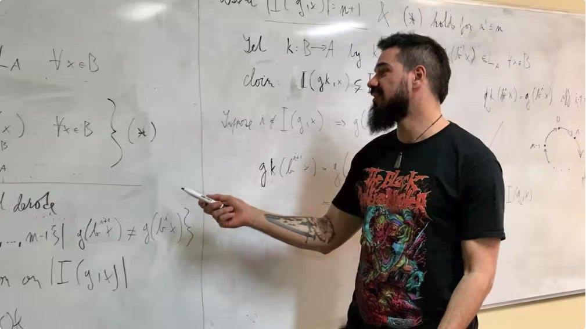

Michal Ferov
Assistant Professor at the Department of Computer Science, Faculty of Science, University of South Bohemia in České Budějovice.
I study infinite groups through their finite quotients, the complexity of decision problems in algebra, and the computational side of totally disconnected locally compact groups.

About
I joined the University of South Bohemia in 2026 in a tenure-track position. From 2018 to 2025 I was a postdoctoral research fellow, and from 2022 also a lecturer, at the University of Newcastle in Australia, working with Laureate Professor George Willis. Before that I held postdoctoral fellowships with Professor Murray Elder at the University of Technology Sydney and the University of Newcastle.
I received my Ph.D. from the University of Southampton in 2015 under the supervision of Ashot Minasyan, with the thesis Separability properties of graph products of groups. My B.Sc. and M.Sc. in mathematical methods of information security are from Charles University in Prague. Between my doctorate and my first postdoc I spent a year in industry as a machine-learning researcher at Seznam.cz.
Research
Most of my work is in combinatorial and geometric group theory and its interplay with theoretical computer science and topological groups.
Separability and finite quotients
Decision problems
Formal languages and automata
Totally disconnected locally compact groups
My wider interests in computer science include information security and cryptography, natural language processing, and deep learning and vector embeddings.
Publications
Preprints
Journal articles
Surveys and book chapters
Conference papers
Teaching
Students
Community
Organisation
Selected invited talks
- Institute of Mathematics of the Polish Academy of Sciences, Poland
- Institute of Mathematics of the Czech Academy of Sciences, Czech Republic
- Totally Disconnected Locally Compact Groups from a Geometric Perspective, WWU Münster, Germany
- Virtual Seminar on Geometry and Topology, Korea Institute for Advanced Study, Seoul
- Illustrating Number Theory and Algebra, ICERM, Brown University, United States
- Topology and Geometric Group Theory Seminar, Ohio State University, United States
- KAFKA seminar, Charles University in Prague, Czech Republic
- Mathematical Colloquium and CCSE Seminar, University of Newcastle, Australia
- Group Actions Seminar, University of Sydney, Australia
- Séminaire Groupes et Analyse, University of Neuchâtel, Switzerland
- Algebra Seminar, Masaryk University, Brno, Czech Republic
- Geometry and Analysis on Groups Research Seminar, University of Vienna, Austria
Research visits
Refereeing
Journal of Algebra, Bulletin of the London Mathematical Society, Journal of Group Theory, International Journal of Algebra and Computation, Journal of Algebra and its Applications, and International Journal of Computer Mathematics: Computer Systems Theory.
Extracurriculars
Contact
Department of Computer Science, Faculty of Science
University of South Bohemia
Na Zlaté stoce 1619
370 05 České Budějovice, Czech Republic